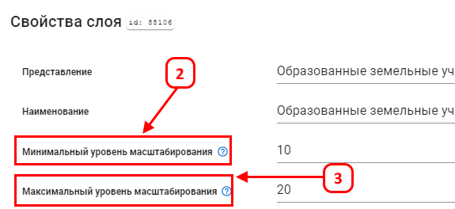
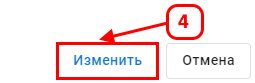
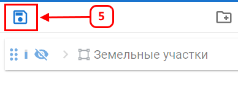

Минимальный и максимальный уровень масштабирования
Параметры минимального и максимального уровня масштабирования определяют, при каких масштабах слой будет отображаться на карте.
Если масштаб карты выходит за указанные границы, слой скрывается. Это позволяет отображать слой только на соответствующих масштабах,
чтобы избежать перегрузки карты лишней информацией.
Настройка минимального и максимального уровня масштабирования:
- В окне параметров слоя (1) найдите поля Минимальный уровень масштабирования (2) и Максимальный уровень масштабирования (3).

- Введите значение минимального и максимального уровня масштабирования в соответствующие поля.

- Масштаб задается в формате zoom, который также отображается в URL. Например, при масштабе 1:45000 в ссылке будет указан параметр zoom=13.12, а при масштабе 1:3688 — zoom=16.71.
- Слой будет скрыт при масштабировании меньше минимального уровня или больше максимального, в зависимости от установленных значений.
- После настройки необходимо сохранить изменения слоя (4).

- Сохраните слой в проекте (5).

После выполненных шагов слой будет видим только в пределах заданных уровней масштабирования.